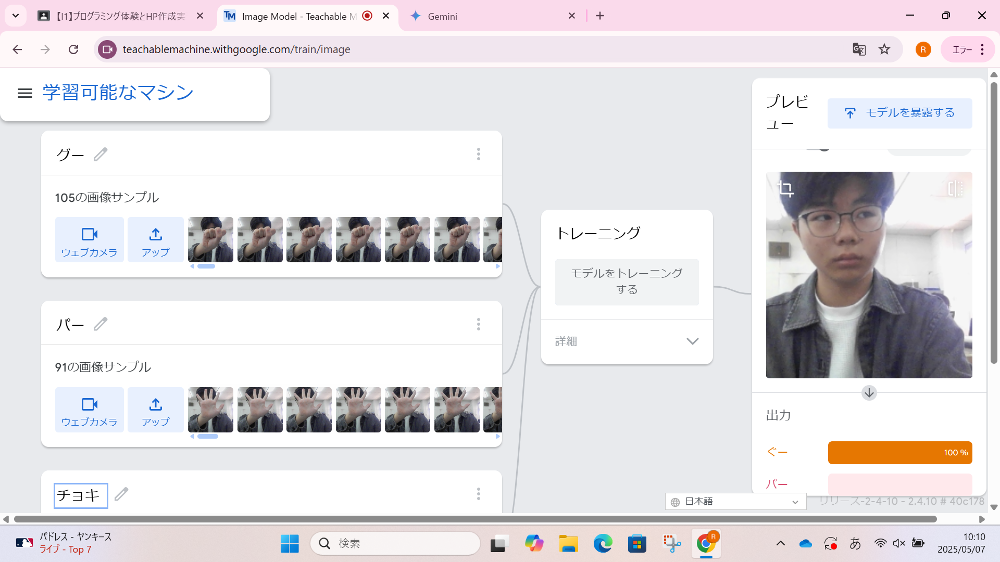
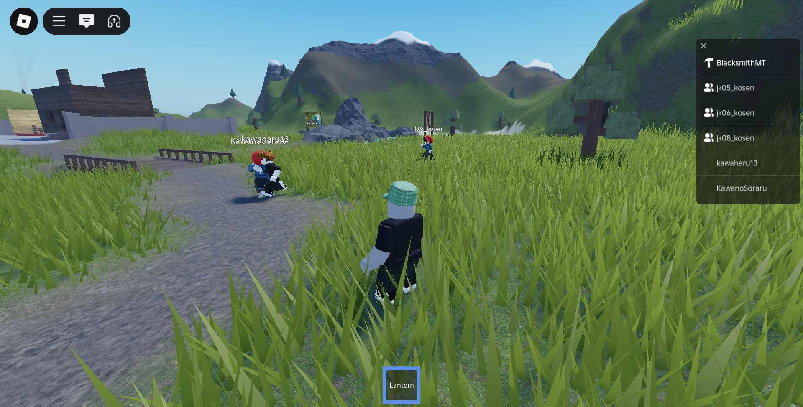
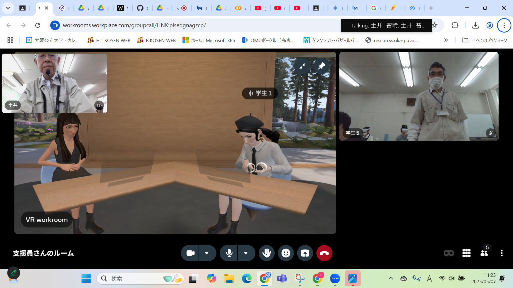

第2週目
2-1 2週目のレポートをHTMLで作る
1.内容
今回の授業ではカメラと画像を使い、機械に学習させ判別できるようにさせました。具体的にはグー、チョキ、パーを判別できるように
手を動かしたり、複数の写真を撮りました
2.感想
学習した内容を実践したときに自分が感じた感想を
コンピューターが画像を認識するには自分が思っているよりも大量に資料が必要となっており、驚きました。
また、右手の写真しかとっていないが左手のことも認識することができる学習能力にも驚きました。
3. 2週目が完成した人は1週目のレポートも完成させる
2-2 機械学習体験

1.内容
今回の授業ではAIと機械学習の関係について学びました。今までの指示されたことを実行するという認識を変えたことについて学びました。
2.感想
当たり前かもしれませんが機械は人間と違いミスをしないというところに改めて凄いと実感しました。
そして、一度学んだことを忘れないところにも感動を覚えました
2-3 VR（バーチャルリアリティー：Virtual Reality）の体験


1きました.内容
今回の授業ではVRの基本的な操作方法やコントローラーなどの道具の使い方、道具の装着方法、などを学ぶことができました。
2.感想
私は今まであまりVRについて触れてきたことが少なく、今回の授業でゴーグルをつけて動かしたとき
私は比較的酔いやすいことが分かったので気を付けていきたいです